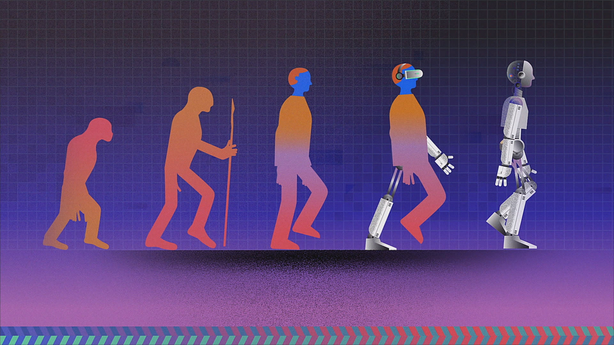

In the near term, the goal of keeping AI’s impact on society beneficial motivates research in many areas, from economics and law to technical topics such as verification, validity, security and control. Whereas it may be little more than a minor nuisance if your laptop crashes or gets hacked, it becomes all the more important that an AI system does what you want it to do if it controls your car, your airplane, your pacemaker, your automated trading system or your power grid. Another short-term challenge is preventing a devastating arms race in lethal autonomous weapons. In the long term, an important question is what will happen if the quest for strong AI succeeds and an AI system becomes better than humans at all cognitive tasks. As pointed out by I.J. Good in 1965, designing smarter AI systems is itself a cognitive task. Such a system could potentially undergo recursive self-improvement, triggering an intelligence explosion leaving human intellect far behind. By inventing revolutionary new technologies, such a superintelligence might help us eradicate war, disease, and poverty, and so the creation of strong AI might be the biggest event in human history. Some experts have expressed concern, though, that it might also be the last, unless we learn to align the goals of the AI with ours before it becomes superintelligent. There are some who question whether strong AI will ever be achieved, and others who insist that the creation of superintelligent AI is guaranteed to be beneficial. At FLI we recognize both of these possibilities, but also recognize the potential for an artificial intelligence system to intentionally or unintentionally cause great harm. We believe research today will help us better prepare for and prevent such potentially negative consequences in the future, thus enjoying the benefits of AI while avoiding pitfalls.
17m 9 Comments


